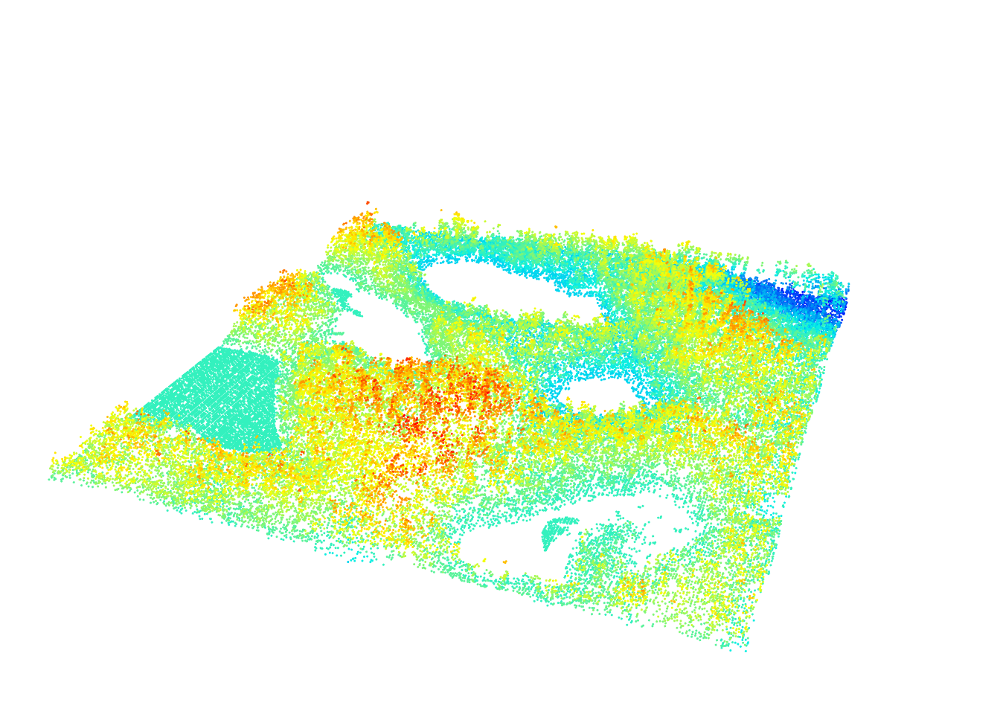
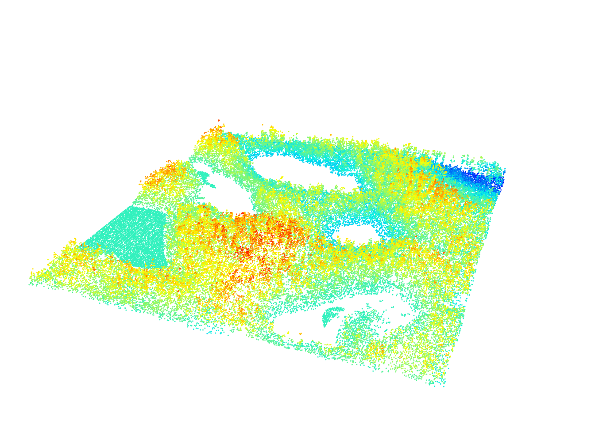
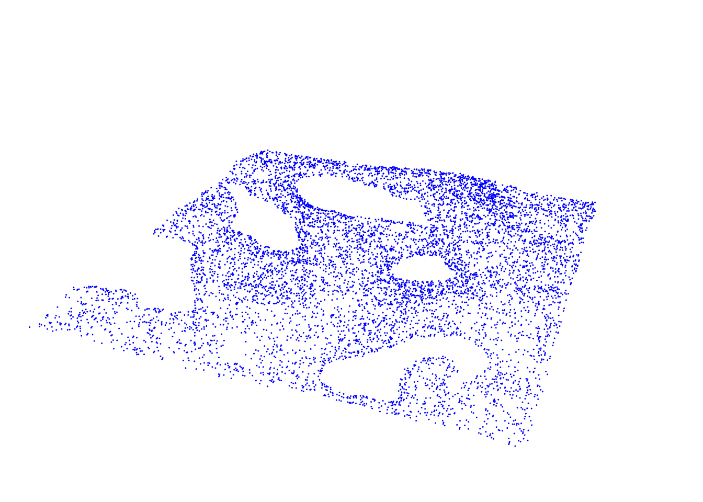
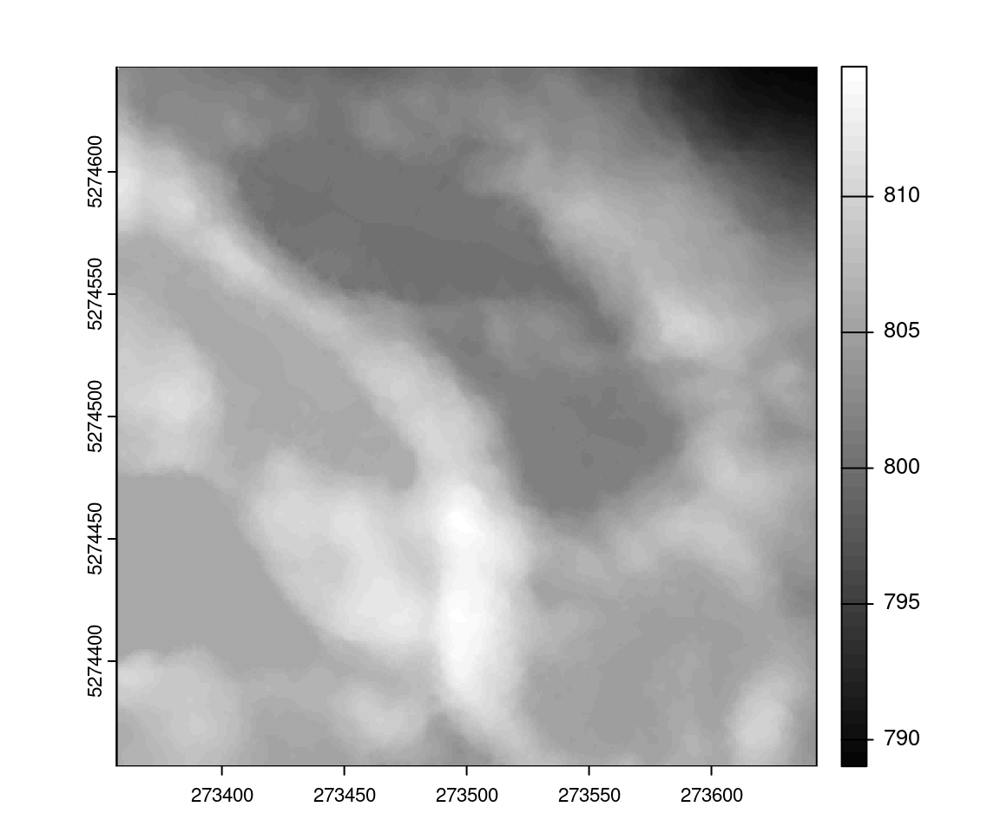
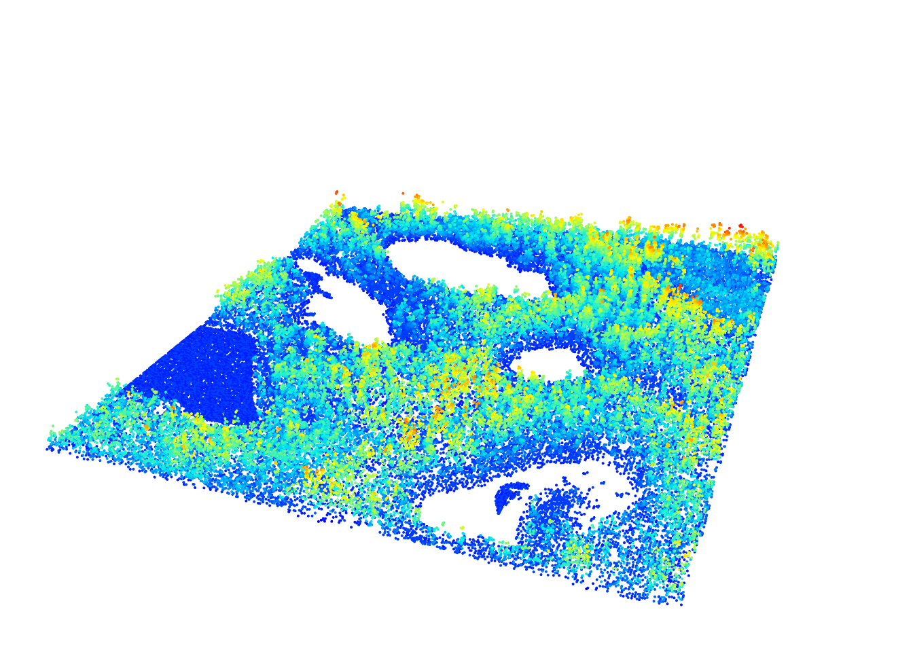
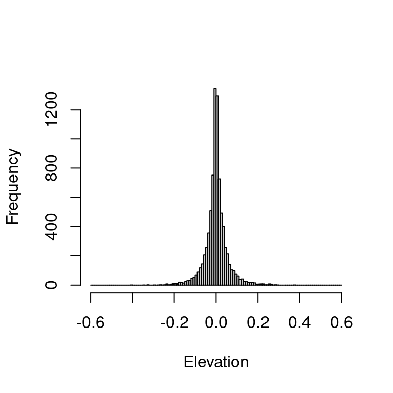
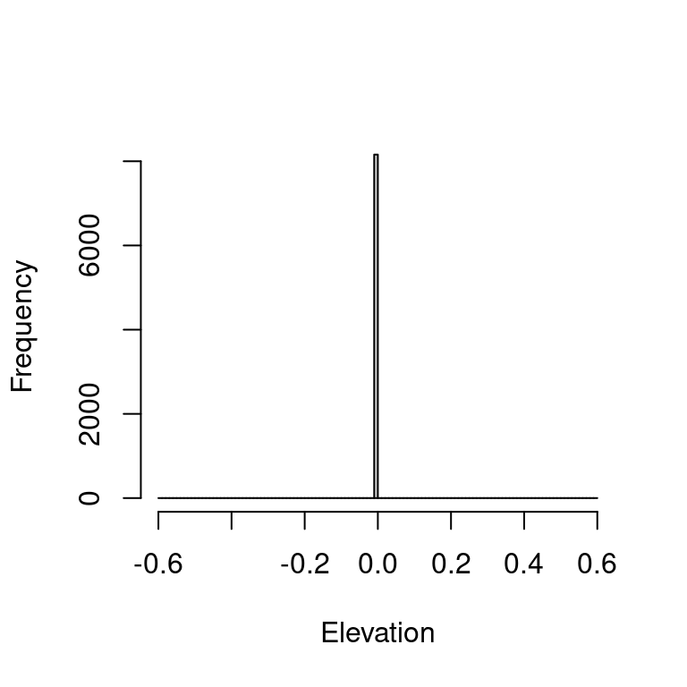

LASfile <- system.file("extdata", "Topography.laz", package="lidR")
las <- readLAS(LASfile)
plot(las, size = 3, bg = "white")
The purpose of the DTM, apart from using it as a stand alone product for water drainage, archaeology, road planning etc. is to facilitate terrain normalization. Described simply, point cloud normalization removes the influence of terrain on above ground measurements. This makes comparison of above ground vegetation heights possible and simplifies analyses across acquisition areas.
When reading a non-normalized file we can see the terrain variation are visible.
LASfile <- system.file("extdata", "Topography.laz", package="lidR")
las <- readLAS(LASfile)
plot(las, size = 3, bg = "white")
To get a better idea of what the terrain looks like lets remove all non-ground points
gnd <- filter_ground(las)
plot(gnd, size = 3, bg = "white", color = "Classification")
The goal of normalization is to get a flat terrain. Two normalization approaches are most commonly used:
To normalize points using a DTM we first need to create the DTM itself. For this we use the rasterize_terrain() function (see Chapter 5). For this example we chose to use a grid resolution of 1 m and to use the knnidw() algorithm with default parameters.
dtm <- rasterize_terrain(las, 1, knnidw())
plot(dtm, col = gray(1:50/50))
Now that we have our surface and are satisfied with it we can use it to normalize our point cloud through subtraction.
nlas <- las - dtm
plot(nlas, size = 4, bg = "white")
We can see that the point cloud has been normalized, making the point cloud flat. All the elevations are now relative to the ground surface. The ground surface being the reference 0 all the ground points are expected to be at Z = 0 by definition. But are they? Lets look at the distribution of ground points.
hist(filter_ground(nlas)$Z, breaks = seq(-0.6, 0.6, 0.01), main = "", xlab = "Elevation")
We can see that the ground points are not all at Z=0 and the histogram shows some points at +/- 25 cm. This occurs because the DTM is a discretized raster. The location of the pixels do not match the locations of the ground points. Lets assume we have two ground points with elevations of 257.5 and 258 meters respectively in a given pixel at 257.9 m. After normalization, their respective elevation will be -0.4 m and 0.1 m because each pixel has a single value meaning that all the points within a given pixel get normalized with the exact same elevation value. In a raster, the elevations are a succession of flat areas with discontinuities at each pixel. Thus a simple subtraction of the raster gives good results visually, but in practice can lead to many inaccuracies because of the discretized nature of the storage format.
Point cloud normalization without a DTM interpolates the elevation of every single point locations using ground points. It no longer uses elevations at discrete predefined locations. Thus the methods is exact, computationally speaking. It means that it is equivalent to using a continuous DTM but it is important to recall that all interpolation methods are interpolation and by definition make guesses with different strategies. Thus by “exact” we mean “continuous”. To compute the continuous normalization, we can feed normalize_height() with an algorithm for spatial interpolation instead of a raster.
nlas <- normalize_height(las, knnidw())All the ground points should be exactly 0. Let check it:
hist(filter_ground(nlas)$Z, breaks = seq(-0.6, 0.6, 0.01), main = "", xlab = "Elevation")
One can reproduce this with other algorithm such as tin(). It’s also important to recall buffer and edge artifacts also apply here
nlas <- las - dtm makes very simple subtractions without any interpolation. normalize_height(las, knnidw()) computes on-the-fly the interpolation of the ground points and estimates the exact elevation of every points. An hybrid method consists in the interpolation of the pixel of an already computed DTM.
nlas <- normalize_height(las, tin(), dtm = dtm)In this case, the ground points in las are not considered for interpolation. The DTM is used as regularly spaced ground points that are triangulated.
hist(filter_ground(nlas)$Z, breaks = seq(-0.6, 0.6, 0.01), main = "", xlab = "Elevation")Point cloud based normalization is superior in terms of computational accuracy by normalizing with a continuous terrain instead of a discretized terrain. It is however computationally intensive compared to a raster-based method. In addition raster DTMs are storable on disk and can be loaded quicky to be used to normalize different data sets, while point cloud based methods need to be recomputed for each point cloud. It’s up to the user to choose which method best suits their needs. lidR provides the options. The hybrid method is also computationally demanding because it interpolates even more data (a DTM is usually 1 point per square meter while ground points are usually less than that.)
lidR also has the capacity to reverse normalization using the unnormalize_height function. This reverts the normalized point cloud to its pre-normalized state.
las <- unnormalize_height(nlas)